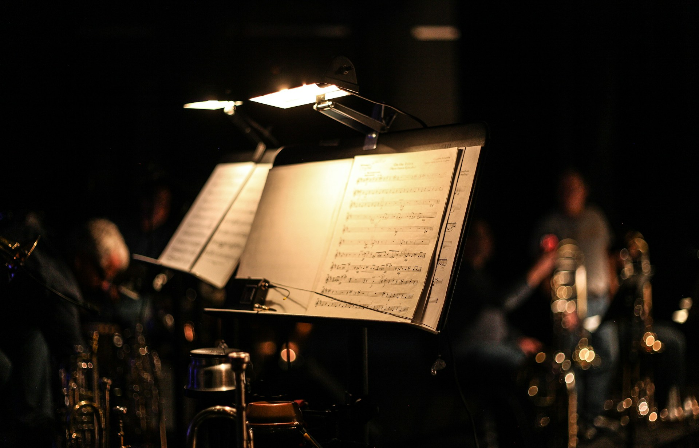

Espacio
La existencia misma.

Ciudades
Todo aquello que nos rodea.

Música
En especial si es música interpretada en vivo.
La existencia misma.
Todo aquello que nos rodea.
En especial si es música interpretada en vivo.

La música me inspira; en general, cualquier tipo de música que haga sentir, emocionar, entristecer o alegrar a las personas es motivo de inspiración. Mi banda favorita es Imagine Dragons, aunque también disfruto mucho escuchar filarmónicas tocando los soundtracks de mis películas favoritas.

Los libros acerca de historia me inspiran bastante. Siempre he sentido una profunda intriga por el pasado y por los datos de épocas anteriores a mi existencia.

Me inspiran personas como Marie Curie y Alan Turing, quienes lucharon por el avance científico. Sin importar la naturaleza de sus aportes, todos tuvieron una razón de ser en este mundo, y eso es digno de admiración.